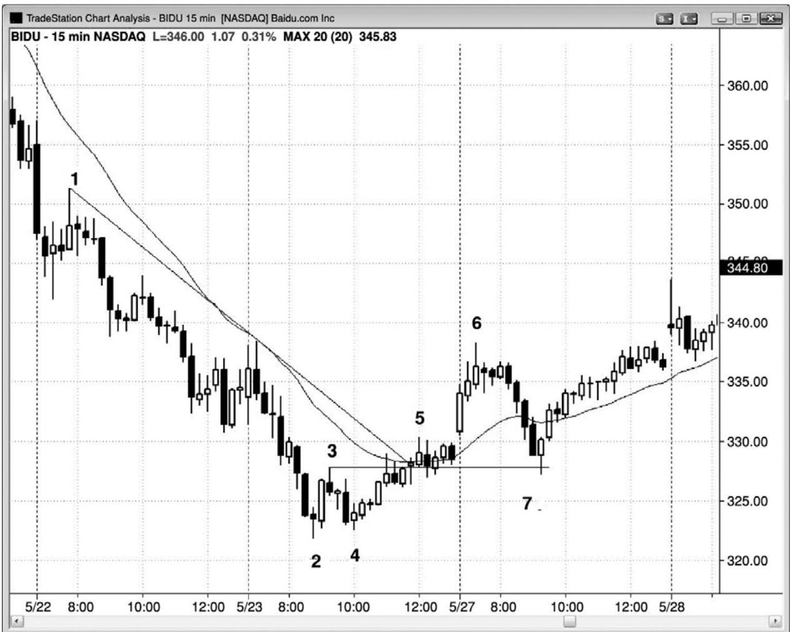
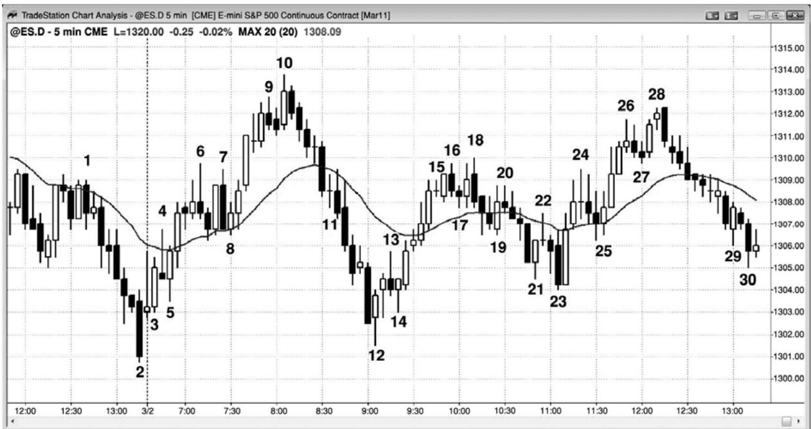

第24章 刮头皮，做波段，交易和投资¶
第 24 章 刮头皮，做波段，交易和投资
投资者根据基本面买进股票，持有时间为 6 个月到若干年，允许基本面因素在股价中反映出来。如果股价变化对自己不利，那么投资者们常常会加仓，因为他们认为哪只股票在当前价位是有价值的投资。交易者根据日线图和短期基本面因素交易，比如收益报告和产品发布，目的是捕捉持续一天到若干天的快速运动。交易者们会在第一个暂停处部分获利了结，然后把止损移至盈亏平衡点，他们不希望让利润变为亏损。有时人们把交易者看作刮头皮者，但是刮头皮者通常指的是一类日内交易者。顺便提一句，坚持自己的时间框架是很重要的。一种常见的亏损原因是，入场一笔交易，看着它变为亏损交易，但是却没有在计划的止损点离场，而是说服自己，把交易变为投资是不错的选择。如果作为交易入场，就要作为交易认赔出场。否则，难免会持有太长时间，最后的损失将是当初最坏情况止损的若干倍。最重要的，它会一直分散你的注意力，干扰你设定和管理其他交易的能力。
在使用日线到月线时间框架的交易者和投资者眼中，所有日内交易都是刮头皮。但是，对于日内交易者而言，刮头皮是持有头寸 1 到 15 分钟左右，通常使用限价单在利润目标离场，无论他们使用什么时间框架，都是试图捕捉一条小型腿。总之，潜在回报（至利润目标的跳动数）与风险规模（至保护性止损的跳动数）大致相等。刮头皮者不希望持有头寸经历任何回撤，如果市场在到达他们的利润目标前折返，那么他们将迅速在盈亏平衡点离场；所以刮头皮者类似于使用日线图的交易者。日内波段交易者会持有头寸经历回撤，他们努力捕捉一天中的 2 到 4 个较大的波段，头寸持有时间从 15 分钟到一整天。潜在回报通常至少为风险的两倍。他们类似于使用日线图的投资者，愿意持有头寸经历回撤。
上世纪 90 年代，媒体和机构投资者们都对日内交易者嗤之以鼻，认为刮头皮者们就像是漫无目的的赌徒。那些批评完全忽视了所有交易者提供的一项重要功能，那就是增加流动性，从而减小滑移价差，使每个人的交易价格都更便宜。大量批评或许来自华尔街上公认的机构交易员。他们认为他们拥有这种游戏，他们就是国王，对于不按他们的方式交易的人，他们并不尊重。他们努力地攻读过MBA，他们认为那些中学没毕业的人只学了几个月简单的交易技术后就能够赚钱，是不公平的。他们因自己的技艺而收到崇拜者们的尊敬，那些不学无术的暴发户们的加入，让他们感到愤愤不平。一旦高频交易（HFT）公司的成交量占到市场上的最大份额，取得优于传统机构投资者的业绩，媒体就开始投来关注的目光，而且对他们的敬畏甚至开始超越自华尔街建立以来就一直处于统治地位的“恐龙们”。HFT 公司是终极日内交易者，他们使日内交易备受尊重。美国全美广播公司财经频道（CNBC）的 Fast Money
（快钱）节目，每天都有经常刮头皮的交易者参加，他们都被认为是受人尊敬的、成功的交易者。现在，一般认为交易者赚钱是不容易的，如果你能够做交易赚钱，那么就非常值得尊敬，特别是来自其他交易者们的尊敬。你怎么交易并不重要。重要的是业绩，在资本化社会中，就应该是这样。成功的投资者、交易者、日内波段交易者和刮头皮者，都应得到同等的尊敬和羡慕，因为他们都是在从事一种特殊的工作，做得非常好需要超常的智力和大量艰苦的工作。
正如第25章关于交易者方程的部分所讨论的，波段交易者选择所有刮头皮交易的相对一方，但是他们也选择交易的另一方，因为有交易者做反向波段交易。刮头皮者的回报与他们的风险大致相等，拥有较高的胜率。不可能存在同样风险、回报和胜率的反向刮头皮交易。举例说明，市场不可能有60%的几率在下跌两点前上涨两点，同时又有60%的几率在上涨两点前下跌两点。我们来看一轮多头趋势。在电子迷你的一个可靠回撤中，如果一位看涨的交易者在信号棒上方一个跳动处买进，他的入场价位是 1254，那么他的两点止损就是 1252，他的利润目标就是 1256。仅当他认为那个架构可能有效的情况下，他才会选择交易，也就是说，他至少有 60%的确定性，即市场跌至 1252，击中他的止损的几率为 40%或更低。如果一名空头刮头皮者选择站在那笔交易的另一方，在 1254.00 做空，那么他的止损在 1256，利润目标在 1252。因为市场跌至 1252 的几率为 40%或更低，所以那个空头只有 40%或更低的几率拿到他的利润。实际上，他的胜率通常会更低，因为他的限价单要想执行，通常需要市场超过它一个跳动，那甚至更不可能实现，因为那将是一波更大的运动。
P220
由于数学概率的原因，选择站在刮头皮交易另一方的那个人拥有较低的成功率。因为在非常有效的市场中，机构控制着价格行为，所以每一笔交易的发生，都必须有一家或多家机构愿意站在交易的一方，另有一家或多家机构愿意站在交易的另一方（没有什么是绝对的，但这一点几乎是肯定的）。这就意味着选择站在合理刮头皮交易另一方的那个人，如果要获得可获利的交易者方程，他的回报就必须要大于风险（你必须假设他那样做是因为他是一家机构，或者是选择机构也愿意做的交易的某个人）。这使他成为一名波段交易者。由于波段交易的胜率往往是 40%或更低，所以波段交易者可以选择站在刮头皮交易的另一方而仍然拥有正的交易者方程。如果市场下跌两点的几率是 40%，那么试图赚到两点利润的波段交易空头，就不得不选择低于40%的胜率。但是，如果他能够正确地管理自己的交易，他仍然能够使用这种策略一致获利。在接下来关于逐步加仓的讨论中你会看到，他可以使用远大于两点的止损，如果市场进一步上涨，他可能愿意多次加仓。如果那样的话，他的胜率就是60%或更高。
一旦市场最后下跌，他就可以在最初 1254 的入场价位退出整个头寸。如果他在初次入场价位退出整个头寸，那么他初次入场的头寸便不赚不赔，后来在更高价位建立的空头头寸都有获利。
要在 5 分钟电子迷你图表上做刮头皮交易，在目前平均每日区间为 8 到 15 点的情况下，你不得不冒大约两点的风险，利润目标通常为1到3点。对于1点刮头皮交易，必须有67%以上的交易盈利，才能保证不赔。虽然有些交易者能够达到这样高的胜率，但是对于大多数人来说，那是不现实的。作为一条一般性规则，仅当回报至少与风险一样大，仅当你对交易比较自信时，才可选择交易。如果你是自信的，那么一条指导性方针是假定你认为成功率至少为 60%。对于电子迷你 5 分钟图上的大部分交易，两点止损目前（每日平均区间为 10 到15 点）来讲是最可靠的，也就是说，你的利润目标也至少应该是两点。如果你认为两点是一个不切实际的目标，那么就不要做那笔交易。顺便提一句，多年以前我有个朋友，常常一次交易100张电子迷你合约，刮取两个跳动的利润，每天大约交易25次。因为他住在一套12,000平方英尺（约合 1,115 平方米）的房子里，所以我认为他可能做得非常出色。但是，我们是生活在高频交易的王国里，对于大多数交易者来说，基本上是不可能一致获利的。另一位朋友曾告诉过我，有个人在华尔街上干代理人赚了几百万，但是做交易却全赔进去了。他或许认为自己比那些赚了几百万的客户都要更聪明，如果交易的话，至少应该同他们做得一样好。他开始在电子迷你中做100张合约的刮头皮交易，头几年便赔了 200万美元。他可能一直很聪明，但却不够明智。不要以为某个事情看起来容易就认为他实际上很容易。
每个人都会碰到“摘樱桃”（译注：形容购物者从一家商店走到另一家商店，只在一家某种商品价格最便宜的商店买这种商品）的问题。为每天做 20 笔交易，每笔交易赚 1 点而忧心忡忡，应该不如每天选择最好的三笔刮头皮交易，每笔交易赚 1 点吧？理论上是可行的，但实际上你不得不为了完美的交易等待很长时间，而且你需要很长时间的刻苦学习，学会捕捉完美交易所需的知识，你需要确保自己得到足够的回报。1 点是不够的。举例说明，如果你认为自己即将在一天中最好的一两个架构之一买进，那么你应该假定市场会同意那个架构很强。那就意味着总在场内头寸可能已经明确地变成了总在场内多头，很可能至少形成两条上涨腿，到达某个测量运动目标或磁力位，而且那一波运动至少应持续十几棒。与冒着两点的风险去刮取 1 点的利润相比，更为合理的做法是至少取得两点利润，甚至 4 点利润后才考虑离场。如果你在情绪上无法操作这笔交易，那么你会发现自己在第一次回撤时于盈亏平衡点离场，你可能会在刚入场多头交易时设定一张双向（OCO）订单，包括两点的保护性止损和两点的利润目标限价单。一旦某张订单被执行，另一张订单就自动取消。然后出去散散步，大约一个小时以后再回来。这样操作几次以后，你可能会尝试 3 点或 4 点的利润目标，而不是两点的利润目标，不久你可能会发现，你在这些交易上的平均利润为4点。
有些刮头皮者所有的交易都是刮头皮，但是很多交易者会根据环境选择做刮头皮交易还是波段交易。对于第二群人来说，他们不会选择在明确的总在场内方向上做刮头皮交易。如果他们在刮头皮，那么他们肯定是认为当前没有趋势，或者他们是在逆势操作，否则他们会做波段交易。即使市场正处于趋势之中，交易者们在回撤入场，如果他们做刮头皮交易，那么他们相信趋势即将结束，至少是暂时结束。举例说明，如果他们在一个多头旗形入场，但是是以一笔刮头皮交易离场，那么他们是在怀疑市场即将进入交易区间。反之，如果他们认为市场即将进入多头趋势，那么他们会继续持有他们的头寸，以期获得更大的利润。每当看到市场在一个信号之后回撤三四个跳动时，就可认为那是大型玩家认为市场很可能不会出现大幅运动的征兆。因此，交易者应仅考虑做交易区间交易或逆势交易，而不是做趋势交易。由于这意味着市场可能处于交易区间内，所以老手们会选择做刮头皮交易，而非波段交易，他们会低买高卖。
当交易者们做逆势交易时，他们有时会选择较小的头寸，比如一半，因为他们希望在市场向不利方向运动时加仓。如果他们那样操作，那么他们可能在市场刚回到初次入场价位时就离场。初次入场较小不赚不赔，二次入场交易获得一笔刮头皮的利润。每当交易者们做刮头皮交易时，他们的利润目标通常为最小波段利润目标的一半，但风险通常相同。这就意味着他们的回报大致与风险相当，所以他们至少需要70%的成功率，否则这就是一种失败的策略。逐步加仓可能有助于提高胜率，但是会因头寸较大而风险更高。虽然刮头皮交易看起来简单而诱人，但实际上很难通过做刮头皮获利。
P221
如果在获得几点利润后部分获利了结，然后利用盈亏平衡止损把剩余部分做波段交易，那么所需胜率就有所降低。如果在入场棒收盘后把止损从信号棒极点调至入场棒极点（两种情况下都是超出 1 个跳动），然后在 5 个跳动后调至盈亏平衡点，那么就会进一步降低当天获利所需的胜率。最后，有些刮头皮者会使用 3 到 5 点的较宽止损，并且当市场向不利方向运动时逐步加仓，然后使用较宽的利润目标，这样更进一步降低了所需的胜率。总之，如果看到一个感觉胜率非常高的架构，那么那笔交易很可能是刮头皮，而不是波段交易。这是因为，每当出现这样明显的失衡时，市场都会迅速做出调整，所以高胜率、低风险情形的持续时间只有一两棒。
波段交易者所用架构和止损与刮头皮者所用架构和止损是相同的，但是他们把注意力集中在每天那几笔很可能至少包含两条腿运动的交易上。他们每笔交易的部分头寸通常可以净赚 4 个点或 4 个点以上，然后把止损调至盈亏平衡点。很多波段交易者会任由市场向不利方向运动，并且在更好的价位加仓。但他们思想上总有一个止损，一旦市场到达那个价位，他们就承认自己的想法不再正确，然后认赔离场。不断寻找刮头皮者们设定止损的价位，并且在那一家位加仓，前提是形态依然准确。如果你打算在预期出现的反转买进，那么要考虑让市场跌至更低的低点，然后在二次入场点加仓。举例说明，对于像苹果（AAPL）这样可靠的股票，如果你打算在自己感知的运动低点买进，而且整个市场不是处于空头趋势日，那么就要考虑在交易时冒2到3美元的风险，然后在出现 1到2美元的浮亏时加仓。然而，只有对自己的读图能力非常自信，并且拥有在读图错误时接受较大亏损的能力的老手，才可以尝试这样做。大多数交易日，市场应该立即向对你有利的方向运动，所以这并不是一个问题。
波段交易者在建仓并获得合理利润后，可以在随后的每个信号增加同等规模的头寸。整个头寸的止损就是最后增加的头寸的止损，那通常意味着他们较早入场的交易会获利，最后入场的交易会亏损。如果市场产生一个反向信号，他们通常还会在跟踪止损被击中前离场。
每个人都希望得到非常高的胜率，但是极少有人能够一直保证自己有70%或更多的交易盈利。因此，只有非常少的人能够以在电子迷你中做利润目标为一两点的刮头皮交易为生，不过每个人在开始从事交易时都会尝试一番。对于大多数想要成功的交易者来说，他们不得不接受较低的胜率，并且培养做波段交易的耐心，允许交易过程中经历回撤。即便非常成功的交易者，除非他们愿意有时把交易波段化，否则他们通常不会加入到一些延长的趋势中，其中交易的成功率通常为60%或更低。很多非常优秀的交易者在这些时间只是静静地坐着，等待高胜率的刮头皮交易，常常错失一波延长运动绝大部分。这是一种可以接受的交易方式，因为交易的目的是赚钱，而非不断交易。
当电子迷你的平均日区间为10到 15点时，通常每天至少有这样一笔交易：交易者以止损单入场，以限价单离场，获得 4 点利润。由于 99%的交易日拥有最低 5 点的区间，所以理论上交易者能够以限价单入场和出场，获得 4 点的利润，但是，在小区间交易日，对于任何交易者来说，是不可能一直成功做到的。总之，对于交易者而言，捕捉那些使用止损单入场，使用限价单或跟踪止损出场的架构，要容易一些。90%的交易日至少有一个 4 点的波段，大约 10%的交易日拥有 5 个 4 点的波段。大多数交易日都有 1 到 3 个可供交易者用止损单入场，并获得4点利润的波段。如果交易者每天做10到15笔交易，那么大部分都是刮头皮交易。然而，刮头皮高手们知道，当某个架构很可能变为 4 到 10 点的波段时，他们通常会把四分之一到一半的头寸波段化。一旦他们退出刮头皮部分，如果市场在他们的波段方向上又出现另外的入场信号，那么他们通常会在附加架构形成时补回刮头皮部分。
P222
当交易者在一天收盘后观察图表时，波段交易看起来非常容易，但实际上要难得多。通常，波段架构要么不清晰，要么清晰但很吓人。大多数波段架构有40%到50%的几率引出一个到达交易者利润目标的波段。其他50%到60%的交易，要么是交易者们认为自己的利润目标不再合理而提前离场，要么是他们的保护性止损被触发。大部分波段交易者都是在反转入场，因为如果他们希望获得 4 点或 4 点以上的利润，他们就要提早入场。当趋势特别强时，他们常常可以通过在回撤或者在强尖峰中一棒的收盘入场而获得 4 点的利润，但是那种情形一周只有一两次。大部分波段交易者努力在某种类型的双重底做多，在某种类型的双重顶做空，或者在一天头几个小时内出现的某个可靠的开盘反转架构入场。在某个反转引起大波段之前，他们不得不多次在反转入场，但总的来说，他们在那些没有达到 4 点利润的交易上通常仍然会赚钱。那些交易最终成为刮头皮交易。举例说明，如果交易者在第一小时内出现的一个双重底买进，6 棒后市场又形成一个合理的双重顶，那么他可能反转做空，之前的多头交易赚到一两点的利润。就像刮头皮者有时做波段交易一样，大部分波段交易者一天下来也会做大量刮头皮交易。一旦波段交易者认为之前的预期不再准确，他们就会离场，常常产生一笔刮头皮交易。
波段交易者看到合理的架构后，他们必须选择交易。波段交易架构看起来几乎总是不如刮头皮架构确定，这种低胜率往往使交易者一直等待。当出现一条很强的信号棒时，它通常是作为一个情绪化反转的一部分出现的，而新手们仍然认为原来的趋势还在起作用。对于这种情形，新手们一般都毫无准备。他们可能认为原来的趋势仍然在起作用，他们可能已经在当天之前的几笔逆势交易上亏损，不希望再损失更多资金。他们的抗拒心理致使他们错过早期的入场。在突破或突破棒收盘后入场，是很难做到的，原因是突破尖峰通常非常大，交易者必须当机立断，接受比平常大得多的风险。因此，他们最终常常选择等待回撤。即使他们减小头寸规模，使资金风险与平常的其他交易一样大，但是一想到跳动数风险为平常的数倍，也会令他们心惊胆战。回撤入场也很难，因为每个回撤都是从微型反转开始的，他们担心回撤是深幅回调的开始。结果他们等到一天几近结束，最终决定趋势是清晰的，但已经没有足够的时间了。趋势尽其所能地把交易者们排斥在外，那是它们让交易者们在一整天的时间里一直在追逐市场的唯一方法。当一个架构简单明了时，其后的运动通常是小幅的快速刮头皮运动。如果一波运动打算运行较长时间，那么它必须是模糊的，很难把握的，使交易者们一直在旁观望，迫使他们追逐趋势。
波段交易者们应该总是想知道是否应该在达到利润目标前提前离场。帮助决策的一种方法是想象自己未持有头寸，想一想是否应该以市价入场一个波段规模的头寸，而保护性止损恰好位于场内波段交易者的止损位置。如果你不会选择那笔交易，那么就应该立即退出波段头寸。这是因为，持有当前的波段头寸，等同于在那一价位，使用相同止损建立一个同等规模的新头寸。
如果交易没有按照预期发展，那么大部分波段交易者会选择以刮头皮交易离场，当刮头皮者正在进入最好的架构时，大部分人会选择把交易波段化，所以波段交易者和刮头皮者的操作之间存在大量重叠。根本的区别在于，刮头皮者的交易数量要多很多，而且大部分交易的利润很可能不多于刮头皮交易的利润，而波段交易者只选择很可能至少会形成两条腿的运动交易。两种方法没有优劣之分，交易者要选择最适合自己个性的方法。
正如第 25 章关于交易者方程的部分所讨论的，波段交易通常不如刮头皮交易确定。也就是说波段交易的胜率要低一些。但是，正在做波段交易的交易者追求的是较大的利润，通常至少是风险的两倍。这种更大的潜在利润弥补了低胜率，能够得出具有获利性的交易者方程。最大的突破一是来自交易区间的突破，一是来自反转，大部分反转形态都是交易区间。此时不确定性最高，胜率通常为50%或更低。波段交易者需要寻找回报比风险足够大的架构，从而弥补较低的胜率。刮头皮交易的确定性要高得多，但高确定性意味着市场出现明显的失衡，交易者们很快便会注意到这种明显的失衡，并把它消除。结果是市场迅速回归混乱状态（交易区间）。刮头皮者在决定入场和获利了结时必须当机立断，因为市场通常在几棒内便会回到入场价位。
波段能够持续较长时间，是因为不确定性，而不确定性通常是能够持续很多棒、涵盖很多点的交易的关键部分。这是在强多头趋势中经常提及的“忧虑墙”，它在强空头趋势中的表现刚好相反。趋势交易的难点在第一本书中讨论过。趋势是从或大或小的尖峰开始的，然后演变为或大或小的通道。当突破较小时，交易者们不确定是否会出现坚持到底。当突破大而强时，不确定性则表现为另一种形式。如果由于较大的风险能够换来诱人的交易者方程，那么他们不确定自己必须要冒多大的风险才能确保不被止损踢出。他们看到那个很大的尖峰，意识到可能不得不冒着跌至另一端的风险。这种增大的风险使得头寸规模都要小很多。当市场进入通道后，他们就开始追逐市场，因为他们的头寸规模比想要的要小。然后通道拥有了成为双向市场的不确定性。在一天的交易结束后，新手们在观察图表时会发现一轮很强的趋势，他们奇怪自己怎么就错过了呢。原因是所有大的运动在展开时都是不确定的，这将把交易者们套出最强的趋势之外。它还常常把交易者们套入反向交易，结果令他们重复亏损。即便是新手，也能感觉到可能性，也能感觉出趋势是低概率事件，事实如此。最强的趋势一个月只出现几次，所以新手们知道今天演变为那些强趋势日之一的几率很小。结果他们要么拒绝趋势，一直被套在趋势之外，要么与趋势相斗，重复亏损。相反地，他们需要接受它，跟随市场正在做的事情。如果市场持续上涨，即使涨势看起来很弱，那么他们也需要至少买进一个小型头寸，并且把它波段化。
波段交易的管理与总在场内交易的管理相同，总在场内交易的管理将在第三本书中讨论，唯一的区别在于，波段交易者倾向于在交易发展过程中以刮头皮交易离场。真正的总在场内交易者，会坚持持有，直到出现反向信号，然后反转进入反向交易。对于大部分交易者来说，波段交易的入场和止损，与趋势交易中的入场和止损是相同的，那些内容在第一本书中讨论过。重要的一点区别在于波段交易者在交易区间内的离场方式，与在趋势内的离场方式不同。在趋势中，他们更可能让部分头寸奔跑，直到出现反向信号，但是在交易区间内，他们更可能在交易区间的极点附近退出剩余头寸。在那一点，他们在研判运动是否足够弱，反转形态是否足够强，从而他们应该寻找反向波段，相反地，如果波段足够强，那么他们会等待回撤，然后在第二条腿重新在原来方向入场。
P223
在电子迷你中，当日平均交易区间为 10 到 15 点时，使用两点止损便不会被止损踢出大部分良好的交易，很多波段交易者会根据具体情况在账面利润达到2到4点时部分获利了结。如果交易者们认为市场处于交易区间，他们正在区间底部向上反转时买进，那么等距运动的概率通常为 60%，甚至更高。由于他们正在冒的风险为两点，所以他们有 60%的机会在止损被击中前赚到两点的利润。结果得到最低可接受的交易者方程，所以交易者可以在两点处部分获利。如果交易者们认为交易区间足够高，可以让他们赚取 3 到 4 点的利润，那么他们可能会在获得相应利润后部分或全部获利了结。别的交易者将在阻力位把多头头寸部分获利了结，比如测量运动目标处的微型反转，先前波段高点上方，以及空头趋势线和多头趋势通道线过冲和反转（失败的突破）。他们会在类似的支撑位把空头头寸获利了结。每当出现强反转信号时，所有交易者都会退出他们最后的头寸。记住，他们会在弱反转信号部分或全部离场，但通常市场不会反转。这是因为交易者们使用的出场标准不同于入场标准。入场前，他们需要更强的信号，但是，当出现与头寸相反的较弱信号时，他们通常会部分或全部获利了结。对于波段交易，很多方法都可获利，唯一重要的问题是交易者方程。只要交易者方程是合理的，那么那种方法就是可获利的，所以就是合理的。
对于老手来说，在交易电子迷你时，（当平均日区间为 10 到 15 点时）主要做利润目标为2到4点的刮头皮交易，在交易股票时，主要做波段交易。如果你是胜率不低于 80%的极为卓越的交易者之一，那么你可以在电子迷你中做一些利润目标为 1 点的刮头皮交易。在账面利润达到 4 个跳动时，使用限价单退出部分或全部头寸，那通常需要市场超出信号棒 6 个跳动以上（入场是使用高出信号棒 1 个跳动的止损单；然后需要市场再运动 4 个跳动，从而获利，你的限价出场单通常不会被执行，直到价格运动超出你的目标1个跳动）。在电子迷你中，4个跳动是1点，等于 SPY（ETF合约）中 10美分（10个跳动）的运动。
那么初学者应该做什么呢？对于大部分交易者来说，如果他们刮头皮时的利润目标小于风险，即便他们 60%的交易盈利，总的来看他们仍然会亏钱。初学者们常常会错误地认为一些架构的胜率是 60%，而实际上他们的很多交易至多只有 50%的确定性，不过在他们交易时看起来拥有更多的确定性。他们或许认为自己只是需要一些经验，把自己的胜率提升到 70%或 80%，那样他们知道交易者方程是对自己有利的。事实是他们永远不会变得那么优秀，因为只有非常少的杰出交易者曾经达到那样高的胜率。那就是事实。
另一个极端是做利润目标至少为风险两倍的波段交易。这些架构中的大多数只有40%到50%的确定性，但那足以得到非常不错的交易者方程。大多数交易日，一天天只有一两个架构，有时有五个以上，通常大部分是重要的趋势反转（在第三本书中讨论）。如果交易者愿意选择低胜率交易（回报必须至少为风险的两倍，在第 25 章讨论），那么他需要选择每个合理的架构，因为如果他挑挑拣拣的话，那么从数学上来看是不利的。对于一揽子此类交易，交易者方程是正的，但任意一笔交易却偏向于亏损，因为胜率不足 50%。胜率较低是因为架构看起来很糟，即使入场后，交易仍看起来很弱，在强趋势最终开始前，通常会出现几次回撤。相反地，很多交易者喜欢等到趋势开始，于是胜率将会达到 60%或更高，不过交易利润已经少多了。很多波段架构非常强，胜率不低于 60%。在那种情况下，每一笔交易的交易者方程都是正的，在数学上是允许交易者挑拣的。另外，交易者方程要么对波段交易有利，要么对刮头皮有利。大多数交易者一开始既会尝试波段交易，也会尝试刮头皮交易，还有其他的差不多每一种方式，比如不同的时间框架和指标，看自己是否能成功，看特定类型的交易方法是否更适合自己的个性。没有什么最好的方法，只要交易者方程为正，就是一种好方法。很多交易者一天努力去抓住 5 到 10 个可交易波段，利润至少与风险一样大的概率不低于 60%。当他们交易时，他们通常会选择微型双重顶做空，选择微型双重底做多。如果交易者认为某个架构很强，至少会产生等于风险的回报，那么它的成功率至少是 60%（第 25 章讨论了等距运动的方向概率数学基础）。这使得交易者的止损与利润目标同样大时，交易者方程依然为正。虽然这是大多数成功交易者采用的交易方式，但是初学者应该首先寻找强波段交易架构，尽管成功率常常只有 50%到 60%。这是因为，当回报是风险的两倍或两倍以上时，虽然成功率较低，但是交易者方程甚至会更强。在电子迷你中，当日平均区间为10到15点时，寻找很可能产生4点（初始风险的两倍）或4点以上利润的波段交易，在达到4点利润时部分或全部退出。随着经验的积累，交易者可以在账面利润达到 2到4点时部分以刮头皮交易出场，然后将剩余部分波段化。如果他专注于这些架构，那么他就给了自己一个合理的机会成为一名可获利的交易者。如果交易者发现自己常常太快离场，那么他应该考虑设置双向（OCO）订单（一张在达到 2 到 4 点的利润时离场，一张在达到 2 点或更少亏损时止损退出），然后走开，一个小时后再回来。他可能突然发现自己成了一名成功的交易者。一旦趋势确立，就在趋势方向上寻找额外的入场机会，大部分做 2 点利润、2 点风险的刮头皮交易，如果趋势非常强，就把一些头寸波段化。听起来相当简单，但交易从来就不简单，因为你是在一场零和游戏中与很多非常聪明的人同台竞技，盘后看起来如此明了的架构，盘中却不甚明显。学习在交易中获利需要很长时间，即便开始获利，你每天也必须要保持警觉，并坚持遵守自己的纪律。交易具有挑战性，但那不是它吸引人的唯一原因。如果你能够成功，那么所得到的金钱回报可能是巨大的。
P224
当谈到股票时，利润目标大小的变化要多得多。对于一只现价$500，平均日区间为$10的股票来说，做利润目标为10美分的刮头皮交易将是愚蠢的，因为你很可能不得不冒两美元的风险，同时你的胜率将不得不达到 95%以上。但是在 QQQ 中做利润目标为 10 美分的刮头皮却是值得的，特别当你的交易规模为10,000股时。
在高成交量、平均区间为几美元的股票（每天至少300 万股，最好700万股以上）中寻找波段相对容易一些。你想要最小的滑移价差，可靠的形态，以及每笔交易至少$1.00 的利润。努力刮取$1.00 的利润，然后使用盈亏平衡止损将剩余部分波段化；一只持有，直至收盘或形成清晰而强烈的反向信号。一天当中，你可能有能力有条不紊地观察 5 只股票，然后在一天其他时间最多查看 5 只左右的股票，但极少交易它们。
电子迷你刮头皮者可能一天仅入场一两笔股票交易，因为电子迷你日内交易要花费大量的精力。另外，如果你只使用棒线图交易，那么可以让 6 张图表同时显示在电脑屏幕上。选一只趋势最好的股票，然后寻找均线附近的回撤。如果在趋势线被强势突破后看到趋势通道过冲和反转，那么你还可以做反转交易。如果电子迷你市场比较活跃，那么就只考虑使用15分钟的股票图表交易，因为那样花费的精力较少。
当你预期出现一波重要运动或一轮新趋势时，当账面利润达到风险的一到两倍时，将25～75%的合约以刮头皮交易了结，然后在市场继续向你的方向运动的过程中把剩余合约逐步了结。当你把刮头皮部分了结后，把你的保护性止损移至盈亏平衡点。在电子迷你中，有时如果你强烈地感觉交易将保持良好的态势，那么你希望冒 4 到 6 个跳动的风险，先离场后重入策略将会产生更差的入场点。好交易不会返回头来让后来者在与聪明交易者在完美时间的入场点相同的价位入场。如果交易很棒，那么错过初始入场的所有交易者们现在非常迫切地入场，他们甘愿在较差的价位入场，会把限价入场单设在比初始入场点差一两个跳动处，使得最初入场者们的保护性止损不会被击中。不过，有时最好的交易也会折返并超越盈亏平衡止损点，将交易者们套出即将形成的幅度大、速度快的趋势。当那种情况看起来可能发生时，就把风险额外增加几个跳动。另外，如果市场返回头猎杀止损后立即恢复新趋势，那么就在超出前一棒一个跳动处（在新的多头趋势中，这是高出前一棒高点一个跳动）重新入场，并且加到你的波段头寸上。
如果市场触及利润目标，但是没有穿过，而订单仍然被执行，也就是说趋势压力可能比图表上所显示的更强，那么市场在下几棒超越利润目标的几率增加。如果你已做多，而市场愿意在腿形的最高跳动买回你的头寸（你使用限价单获利了结），那么就表明买家非常积极，很可能在任意回撤重新出现。找机会再次做多。
类似地，如果市场触及你的利润目标（比如超越信号棒 9 个跳动），但是你的出场单未被执行，那么这很可能是一个失败。如果你已做多，而且市场击中了超越信号棒 9 个跳动的价位，但你的出场单未被执行，那么就要考虑把止损移至盈亏平衡点。一旦这一棒收盘，如果大的背景表明市场很可能反转，那么就要考虑在这一棒下方一个跳动处下单做空，因为那很可能是大部分剩余多头刮头皮者们出场的价位，将为市场提供卖压。另外，在更多价格行为展开前，他们不会再次买进，于是从市场中去除了买家，增加了买家推动市场下跌，使你成功完成刮头皮空头交易的几率。在延长的趋势终点，5 或 9 跳动的失败突破很常见，它们常常成为反转的第一个征兆。
虽然所有股票的交易方式基本相同，但是不同股票的个性略有不同。举例说明，当谈到测试突破时，苹果（AAPL）倍受推崇，而高盛（GS）则以止损猎杀而著名，需要更宽的止损。
虽然理论上可以通过在电子迷你中使用较小的时间框架（比如1分钟图或1,000跳动图）做利润目标为 1 点、风险为 4 到 8 个跳动的刮头皮交易为生，但那就像是淘金，在努力收集金沙，而不是金块。那真的是一项辛苦的工作，即使你做得非常好，也只有微薄的利润，那没什么意思。如果你使用较大的利润目标，并且使止损不大于你的利润目标，那么你就有更多的机会成功并快乐地交易很多年。
P225

如图 24.1 所示，百度（BIDU）在昨天晚些时候向上突破 15 分钟趋势线，所以很可能至少形成两条上涨腿。第二条上涨腿可能已在棒 5 结束，但今天的开盘非常强劲，所以很可能在回撤后尝试向上超越棒 5。截止棒 7 的下跌非常迅猛，但棒 7 是一条强多头反转棒，向上反转了均线缺口、开盘上涨缺口，以及对棒 3 高点的测试（市场在猎杀了那个高点下方的止损后迅速上涨）。对于一只$300 的股票，你需要更宽的止损；所以交易较少的股数，以保持风险相同，但是对于交易的刮头皮部分，要使用更大的利润目标。两美元是一个合理的初始目标，然后把止损移至盈亏平衡点，并且在收盘前离场。由于这是空头尖峰和通道之后的一个多头反转，所以市场很可能会测试通道顶点棒1。
对于非常成功的刮头皮者，如果他们认为任何交易的成功率都不足70%，那么他们可能不会选择加入在截止棒 7 的下跌尖峰做空的行列。对于专做刮头皮的交易者们，如果他们认为较弱的尖峰期内的胜率没有高到可以做刮头皮，那么他们会静静地做在那里等待时机。结果是他们有时会错过相对大型的波段。然而，对于盈利交易达 70%以上的少数交易者来说，

P226
今天（如图24.2所示）为波段交易者在两个方向上都提供了很多机会。市场昨天下跌了近2%，但数月来一直处于强多头趋势中。抛盘只是向下刺穿日均线，是测试 60分钟尖峰和通道多头趋势中通道底部的回撤。这就意味着交易者们会把它看做一个支撑区，认为昨天快速的抛盘可能只是一个卖出真空，而不是空头趋势的开始。棒 3 和棒 5 都是强多头趋势棒，在这两棒之前，市场都试图测试昨日低点。今天第一棒有一条很长的上尾线，表明市场是以抛盘进入那一棒收盘的。但是，市场并未找到足够的空头驱动市场跌破昨日强空头收盘，多方太强，他们不允许低点 1 空头信号被触发。棒 4 低点 2（有人把它看作低点 1）触发，但是被棒 5 强势向上反转。交易者们认为这是当天一个可能的低点，于是在棒 5 上方使用止损单买进，预期形成上涨波段。棒 7 处的双重顶一直未被触发，因为它是一个双棒反转，触发信号低于两棒中较低一棒的低点（棒7前面的多头棒），而不是仅仅低于那条空头棒。当棒 6和棒 7 正在形成时，有些多头会在这里部分获利（根据他们的入场点，获利 2 到 3 点），那些多头的清算使棒线上方形成上尾线。双重顶之后是棒 8 多头趋势棒，在多头波段中的均线上方形成一个高点 2 买进信号，那是一个可靠的买进架构。有些多头在市场从这个入场上涨2 点、3 点或 4 点时部分获利了结，有些多头在上涨 3 点或 4 点时全部获利了结。很多人会一直持有，直到市场在棒10双棒反转给出一个卖出信号。就像很多波段交易一样，这个卖出架构并不理想，因为从棒 8 开始，市场表现出很强的上行动能。这降低了空头波段交易的成功率。不过，如果这是一个交易区间日，那么空头至少拥有50%的机会市场会测试当日区间的中点，约低于入场价位 5 点。在风险为两点的情况下，这将产生不错的交易者方程。
这仍然是一种可接受的交易方法。¶
这是强空头日之后的第二条上涨腿，所以是当天一个可能的高点。有些空头会在这里做空，但有些交易者怀疑这样强的反弹之后是否可能出现另一次上涨尝试。一旦市场在棒11 前面的空头棒向下强势突破，交易者们就会放弃市场可能形成一个多头旗形向均线回撤的观点。很多交易者会在这条大型空头棒做空，正是因此它才成为一条大型空头突破棒。还有交易者会在棒 11 收盘做空。由于它没有形成多头收盘，所以是对空头突破的确认。仍然有交易者在追逐市场下跌，在随后的空头棒做空。因为交易者们知道市场可能会在昨日低点附近形成一个双重底，所以这次抛盘可能是一个卖出真空，而不是下跌趋势。这使得很多交易者在昨天和今天的低点支撑位附近做空时感到犹豫不决。
棒12是一条强多头反转棒，其低点略高于昨日低点，所以是双重底做多架构的信号棒。它还出现在当天最大的空头实体之后，那条空头棒是一个耗尽型卖出高潮和卖出真空，而不是空头趋势的起点。聪明的空头在此获利，但很多人会在距入场价位 2 点、3 点或 4 点时部分获利，预期形成双重底，并且预期当天成为一个交易区间日。他们的预期是基于正确的假设：无论尖峰看起来有多强，80%的向上和向下的突破尝试都将失败。强势多头也会在卖出真空买进，建立新的多头头寸。记住在截止棒10的反弹中多方看起来有多么强，所以后来看到的运动只是买进真空，不是新的多头趋势。
在正在形成的交易区间的底部，棒 13 低点 1 做空架构失败，形成一个二次做多入场，然后在棒14形成一个多头反转棒更高低点。很多多头会在此再次做多，预期形成一个上涨波段。截止棒15的上涨尖峰非常强，所以交易者们预期回撤后将形成另一波反弹，大部分交易者认为，只要市场未跌破多头尖峰的底部，这一预期就是正确的。有些交易者把他们的保护性止损设在棒14低点下方，而有些交易者则把保护性止损设在棒12低点下方。如果他们在靠近尖峰顶部处买进，那么他们的风险会比较高，所以他们的头寸就不得不小一些。新手们可能很难在棒12或棒14上方买进，因为抛盘非常陡峭。但是，那一天看起来会成为一个交易区间日。所以老手们愿意在只有 40～50%成功率的架构买进，比如在棒 12，他们认为在风险为两点的情况下，有可能赚到大约 5 点的利润。棒 14 可能有 60%的成功率，但回报会略少一些。两个架构都拥有不错的交易者方程，不过新手在选择它们时可能有些困难。
P227
激进型空头会在棒18双棒反转下方做空，那是一个双重顶，也是当天一个更低高点。而
有的交易者则等待在回撤买进。
棒 19 看起来是一个高点 2 买进入场，但由于它前面一棒不是一条很好的买进信号棒，所以大部分交易者不会在棒19向上外包时买进。大部分人在买进前会等待回撤。有些交易者可能会在棒19上方买进，原因是它拥有很强的多头实体，市场向上突破它的高点，确认了它对前一棒的向上突破。市场没有形成突破回撤，而是向下突破。
棒21是一条强多头反转棒和一个高点3买进架构。然而，由于市场仍然处于从棒18开始的空头通道内，所以很多多头宁愿选择二次入场，那出现在棒23，是一个高点 4双棒反转。有些人会在高点4买进，有些人会在棒 23后面的多头棒上方买进。他们把这看作棒 12到棒16 尖峰之后的一个多头旗形，而且他们预期形成第二条上涨腿，或许形成腿 1=腿 2 的一波上涨测量运动。一些在棒21上方买进的交易者，注意到市场在向上突破那一棒顶点后，可能形成一波更低低点回撤，这正是市场的走势。由于存在这种可能性，所以很多人会交易较小的头寸，使用宽松的止损，比如可能设在棒14或棒 12 下方，或者使用3到5点的止损。然后那些交易者们在棒 23 双棒反转上方对自己的多头头寸补仓。有些多头会在固定的利润间隔部分获利了结，比如 2 点、3 点或 4 点，而有些多头会等待价格行为利润目标，比如在棒 26第二条上涨腿下方，或者在棒28楔形反弹下方（棒 24、26和28 是三次上推）。
激进型空头会在棒 28 或它后面的空头棒下方做空，预期市场测试从棒 23 开始的上涨尖峰之后的棒 25 多头通道。他们在账面利润达到 2 点、3 点和 4 点时获利了结，或者在棒 25多头通道低点、或略低、略高处获利了结，或者就在当天收盘前获利了结。